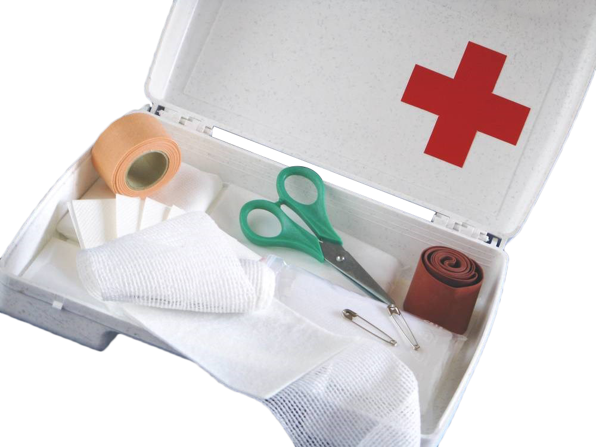

Alapok
Mi van az elsősegély dobozban?
(Országonként váltózó mennyiségű és minőségű)
- Több méretű müllpólya (géz)
- Többmértű müllap
- Három szöglétű kendő
- Györskötöző
- Betadin
- Olló
- Biztosítókapocs
- Steril Gumikesztyű
- Sebtapasz
Vérzéstípusok
- Hajszáleres (kapilláris) vérzés: Élénk piros, kis mennyiségű gyöngyöző vér.
- Vénás vérzés: Sötét vöröses, nagyobb mennyiségű "folyó" vér.
- Artériás vérzés: Szintén Élénk piros, nagy mennyiségű, lüktető / spriceelő vér.
Sebtípusok
- Zárt sebek:
- Zúzott
- Vérömleny (véraláfutás)
- Hólyagos
- Nyílt sebek:
- Égett
- Szúrt
- Horzsolt
- Vágott / Metszett
- Szakított / Tépett
- Harapott
- Lőtt
- Extrém esetben: Amputáció
Törés típusok / csont sérülések
- Csonthártya sérülése
- Csont zúzódása
- Zárt törés
- Nyílt törés
- Szilánkos törés
- Stabil törés
- Zöldgally-törés